Microstructural Analysis of Stainless Steels
Objective
To observe the phases present in the microstructure of stainless steels.
Apparatus used:
Metallurgical Microscope, Polishing Machine with Abrasives, Belt Grinder, Abrasive paper, Flat Glass plate with Wooden framework, Electric Hot Air Blower, Cotton, Marbles Reagent (etchant), Specimen.
Description Austenitic stainless steel : Type of stainless steel classified by their austenite type crystal structure (FCC crystal structure) which shows resistance to corrosion. It consists of Chromium which forms Cr2O3 to resist corrosion and Nickel, Manganese and nitrogen which stabilize the austenite phase.
Austenite : A high-temperature phase of non-magnetic iron and carbon solid solution which exists only after the eutectic temperature 727 °C. It has an FCC crystal structure.
 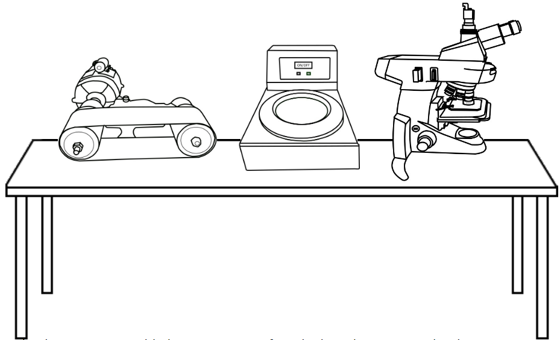
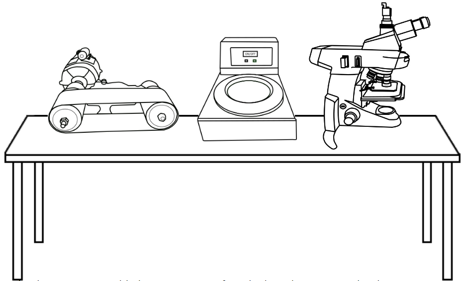
Select a sample to analyse its microstructure.
Obtain a flat surface on the specimen by belt grinding.
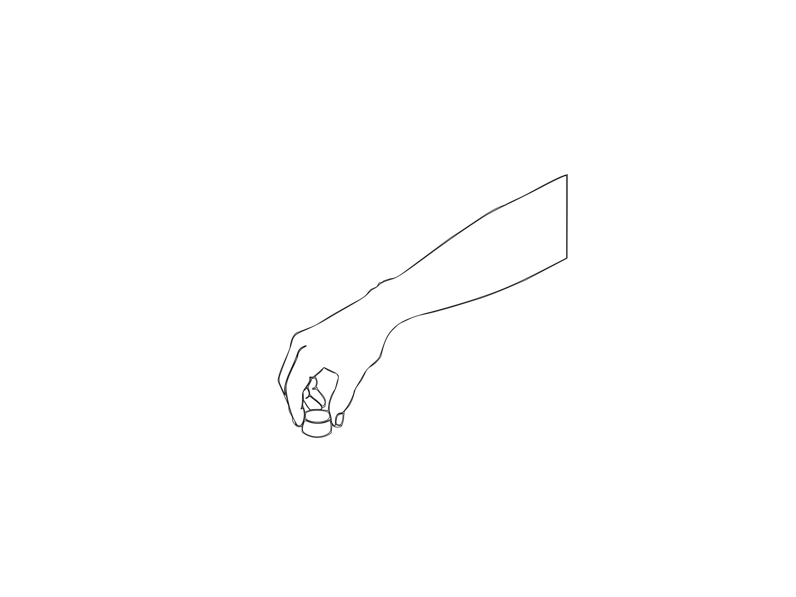


Support a polish paper of 1/0 fineness on a flat glass plate. Polish the specimen rubbing in forward direction only.
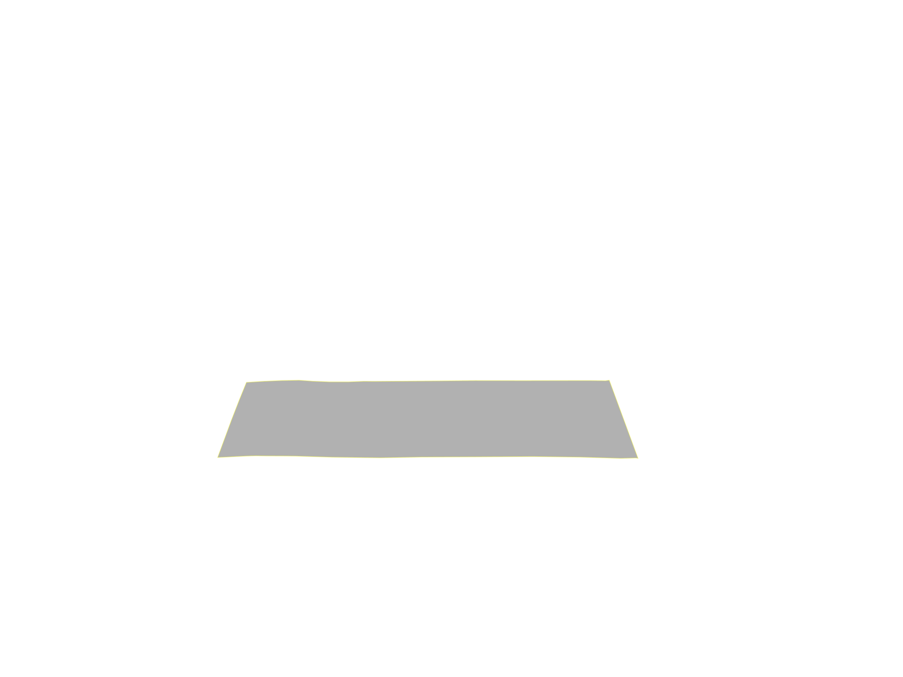 Note:
Move to the next finer paper (2/0 and 3/0) once the scratches on the specimen are uniform. While changing from one paper to another, the specimen and your hands should be cleaned free from the abrasive of the previous paper, and the specimen turned through 90°, so that the scratches from the previous paper are at right angles to the scratches from the next paper.
Finish polishing the specimen on 4/0 abrasive paper, wash hands and specimen.
Do the fine polishing on the disc polishing unit.
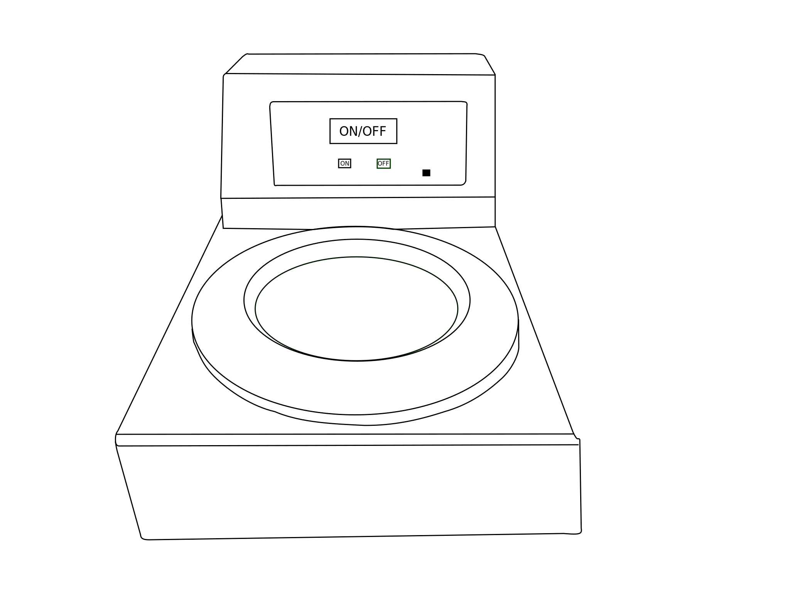 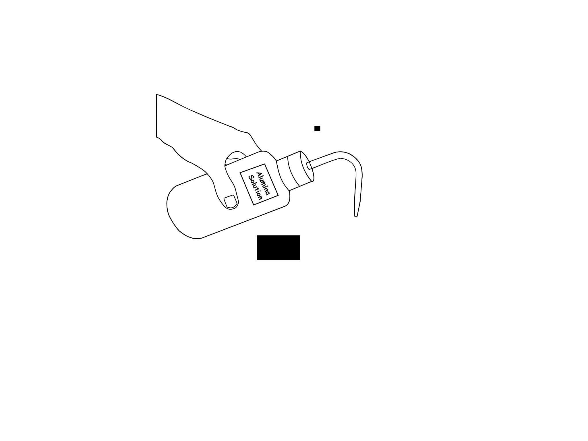 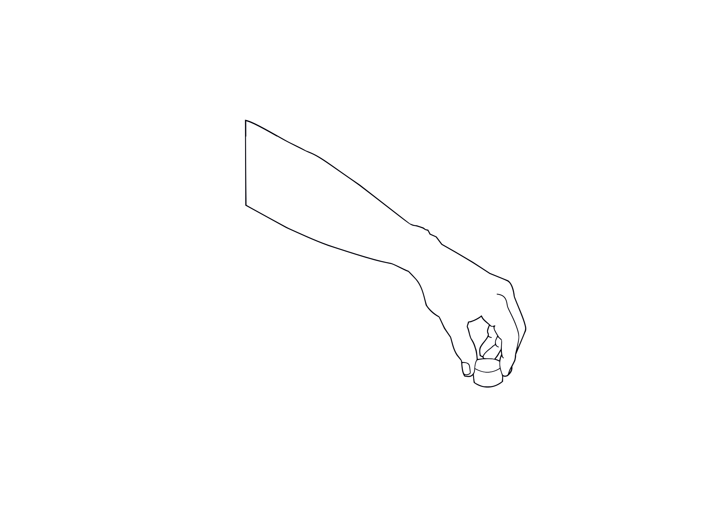


Etch the specimen with marbles reagent by swabbing for a few seconds. Wash and dry.
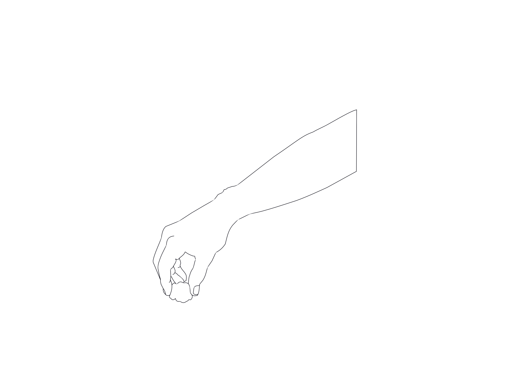
 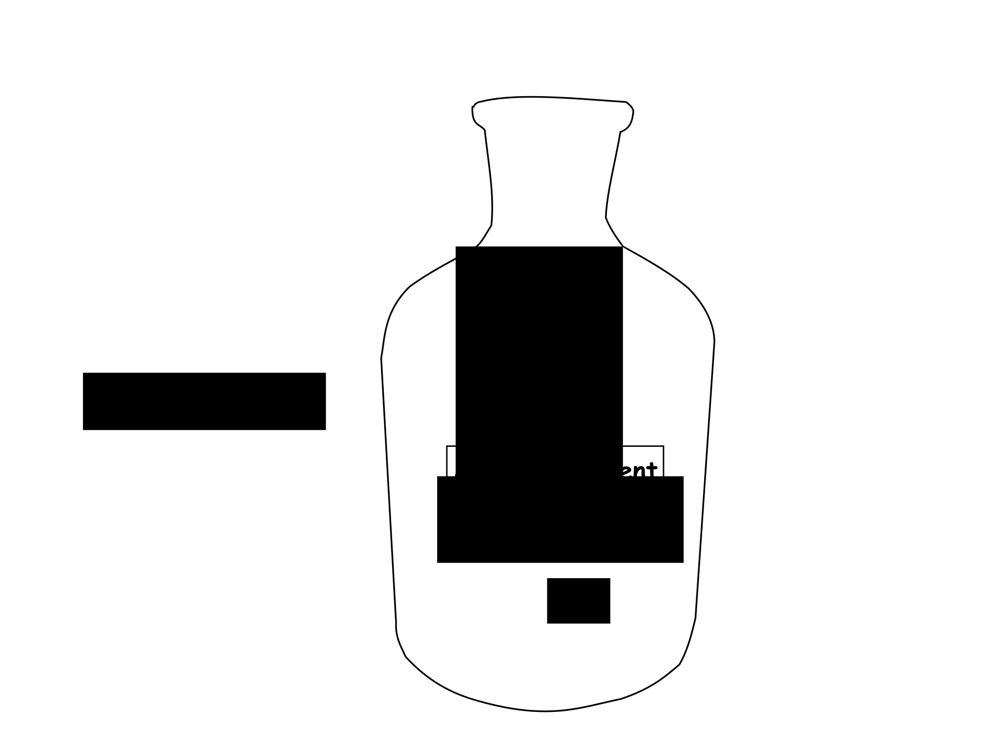
Note:Marbles reagent : A solution of hydrochloric acid (HCl) and copper sulphate (CuSO4) dissolved in water. A standard mixture contains 20ml HCl and 4g CuSO4 added to 20ml water. It forms a green solution, with a pungent acidic odour and a pH below 1.
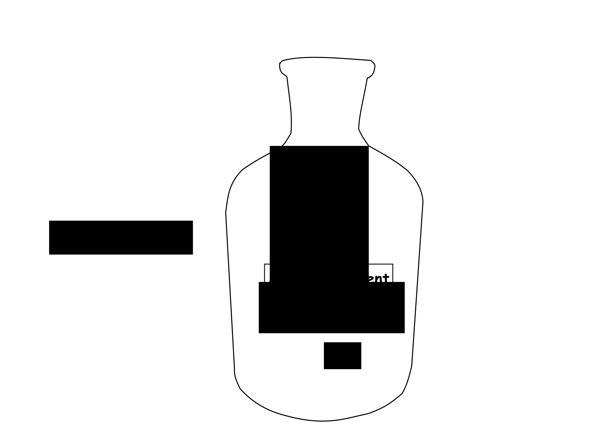
Note:Marbles reagent : A solution of hydrochloric acid (HCl) and copper sulphate (CuSO4) dissolved in water. A standard mixture contains 20ml HCl and 4g CuSO4 added to 20ml water. It forms a green solution, with a pungent acidic odour and a pH below 1.
Examine the specimen under the microscope and observe the structural features.
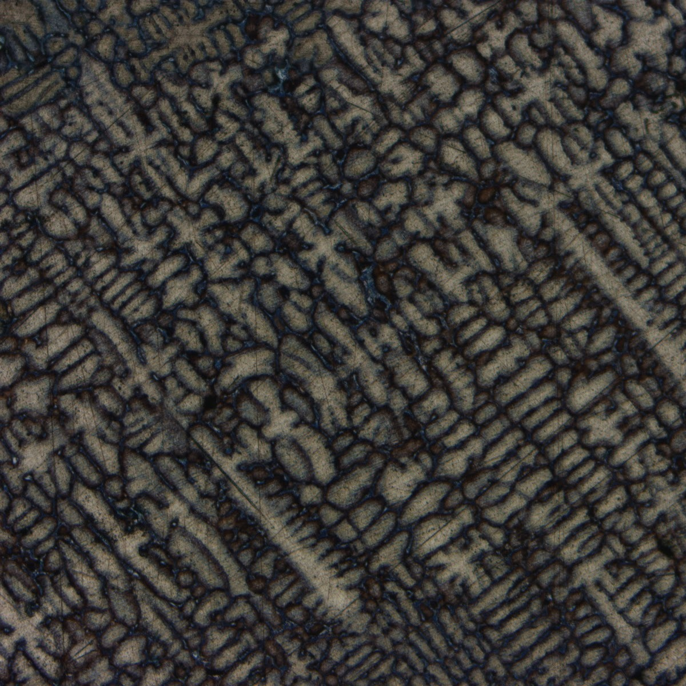 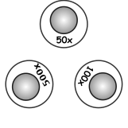
Use the slider to view the microstructure at different magnification levels.
Number of phases: 2
Features of each phase :
- Austenite: Dendrites of Austenites can be observed. The presence of Ni stabilizes the Austenitic structure.
- Eutectic Carbide phases: M23C6 phases are observed due to the presence of Chromium and carbon.
Number of phases: 3
Features of each phase:
- Martensite: needle-like structures
- Retained austenite: Present along the grain boundaries due to incomplete transformation.
- Carbide Phases: Precipitated along grain boundaries.